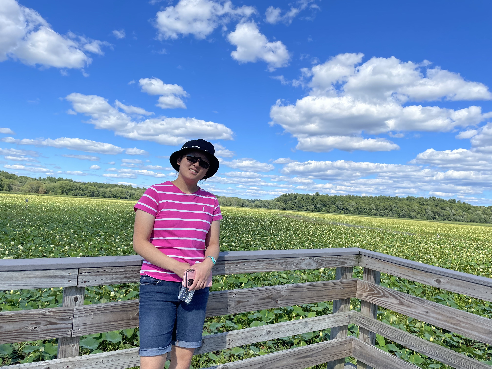
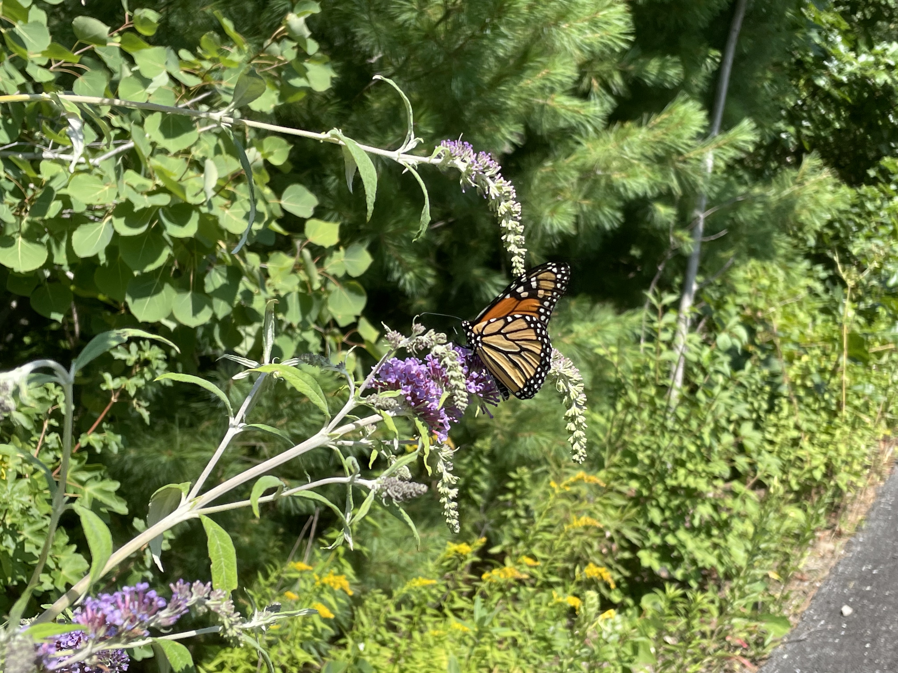
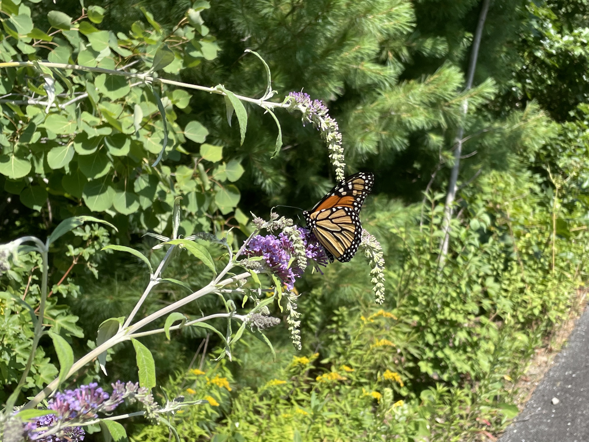

Aside from Computer Science, I have picked up a couple hobbies:
I am a huge Kpop, pop, and lofi fan! Feel free to check out my Kpop Spotify playlist below. BTW: I plan to create a little project in regards to my music sometime soon and place it on my website, so stay tuned for that!
I also sing and make my own covers for fun when I have the time. Here is a drive file of some of my best work. Although I've never been trained to sing, I singing covers to put my own twist on songs and to have fun! Listen at your own risk; again, I am not a professional: just playing around with my voice! I also have thrown in some instrumentals I made thanks to the Garageband library filled with a plethora of different instruments.
I also am a nature fan! When the weather's nice, I like taking walks/runs on the local bike trail, and I bike on the bike trail as well! Here is an assortment of pictures of me walking around in nature and the wildlife around my hometown!
 
